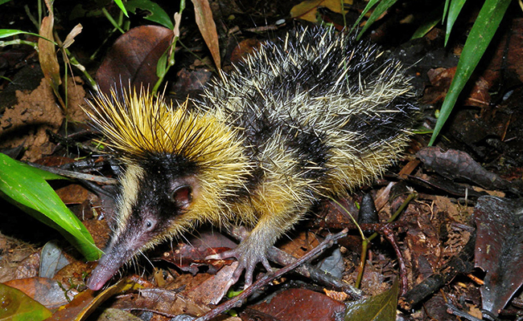

Tenrec zébré des terres basses ou petit porc-épic jaune et noir (Antsora)

Jaune et noir comme une abeille, le tenrec zébré des terres basses peut aussi piquer ! Le petit porc-épic malgache revêt un pelage épineux qui lui est très utile au quotidien. Il se sert non seulement de ses pointes pour intimider ses prédateurs mais aussi pour communiquer avec ses congénères. Le tenrec zébré des terres basses possède en effet la particularité d'émettre des stridulations en frottant ses piquants. Cap vers Madagascar pour découvrir le seul mammifère au monde qui stridule.
Qui est le tenrec zébré des terres basses ?
Le tenrec zébré des terres basses appartient à l’ordre des Afrosoricidés et à la famille desTenrecidés. L’animal mesure de 16 à 19 cm de long pour un poids compris entre 125 et 280 g. Malgré sa ressemblance avec le porc-épic (qui lui vaut son surnom de petit porc-épic jaune et noir), il n’est pas apparenté avec le rongeur. Deux espèces de tenrecs zébrés, très proches l'une de l'autre, vivent exclusivement à Madagascar :
Le tenrec zébré des plaines ou des terres basses (Hemicentetes semispinosus) ;
Le tenrec zébré des terres hautes ou des montagnes (Hemicentetes nigriceps).
Comment reconnaître le tenrec zébré des terres basses ?
Le mammifère malgache arbore un corps rond, une face conique, des petites oreilles ainsi qu’un museau long et pointu. Ses pattes sont courtes et sa queue quasi inexistante. Ses yeux minuscules ne lui offrent pas une bonne vue. Le tenrec zébré des terres basses revêt un pelage noir, rayé longitudinalement de jaune. La robe bicolore du petit mammifère l’aide à se camoufler dans le feuillage tandis qu’il fouille le sol à la recherche de nourriture. Son corps se pare à la fois de poils durs et de piquants que l’on remarque particulièrement sur sa tête où ils forment une couronne érectile jaune.
À quoi servent les piquants du tenrec zébré ?
Contrairement au hérisson, le tenrec zébré des terres basses ne peut pas se mettre en boule pour se protéger d’une attaque. S’il se sent menacé, il doit utiliser ses pics comme moyen de défense. En présence d’un prédateur, le petit animal dresse les piquants de sa tête et de son dos en guise d’intimidation. Si cette mesure dissuasive n’obtient pas l’effet voulu, le tenrec zébré fonce directement sur son assaillant en visant le museau ou les pattes. Comme chez le porc-épic, ses pointes détachables peuvent rester plantées sur son ennemi et repousser rapidement par la suite.
Tenrec zébré : comment fait-il pour striduler ?
Le petit porc-épic jaune et noir présente une autre particularité : il peut communiquer avec ses congénères en émettant des stridulations. Cette technique sonore est utilisée par certains insectes – comme le grillon, la sauterelle, le criquet - ou par la vipère.
Le tenrec zébré des terres basses possède entre 7 à 16 piquants spécialisés qu’il frotte les uns contre les autres pour produire un son aigu, à hautes fréquences, audibles uniquement par ses congénères.
Ce mécanisme de communication acoustique ne s’adresse qu’aux membres de son espèce dans le but, bien souvent, d’avertir d’un danger.
Le tenrec zébré des basses terres est le seul mammifère connu à présenter la capacité de striduler.
Où vit le tenrec zébré des terres basses ?
Espèce endémique de Madagascar, le tenrec zébré des terres basses colonise essentiellement l’est de l’île. Comme son nom l’indique, le petit porc-épic jaune et noir évolue en plaine, dans les forêts tropicales pluviales, primaires et secondaires, situées du niveau de la mer jusqu'à 1550 m d'altitude. On le rencontre aussi sur les terres agricoles, dans les prairies et les jardins de la population locale. Le mammifère vit au sein de terriers familiaux qu’il creuse dans des sols humides et qu’il referme par un bouchon de feuilles. Chassant de jour comme de nuit (son cousin des terres hautes est plutôt nocturne), le tenrec zébré des terres basses se nourrit quasi exclusivement de vers de terre qu’il déloge en frappant le sol avec ses pattes antérieures.
Comment se reproduit le tenrec zébré ?
L’espèce est grégaire toute l’année mais durant la saison des amours, des combats peuvent survenir entre rivaux. Les mâles deviennent aussi territoriaux et délimitent bien leur domaine à l'aide de leurs déjections et marques odorantes. Chez le tenrec zébré des terres basses, les deux sexes atteignent la maturité sexuelle très tôt, vers l’âge d’un mois environ. La période de reproduction se tient à la saison des pluies, entre septembre et décembre. Le mâle courtise la femelle en reniflant autour d’elle, le nez pointé vers le haut. Si cette dernière n’est pas réceptive, elle peut rejeter son soupirant en lui piquant les organes génitaux. à l’inverse, quand le mâle n'est pas repoussé, il peut approcher sa partenaire, lui flairer le cou et le derrière pendant que celle-ci lui mordille le nez.
Comment sont élevés les jeunes tenrecs zébrés ?
Au terme d’une gestation de 55 à 63 jours, la mise bas se déroule entre décembre et mars. La future mère aura pris soin, auparavant, de creuser un nid dans le sol du terrier avec son museau. La portée compte jusqu’à 6 petits qui pèsent environ 11 g et mesurent entre 5,5 à 6,5 cm de long. à noter qu’ils sont dépourvus de pics à leur venue au monde (les pointes apparaissent dans les 24 heures). Aussitôt après la naissance, la femelle époussette le nez de ses bébés pour les aider à bien respirer. Chez cette espèce, les deux parents s’occupent des jeunes (les soins n'ont toutefois été observés qu'en captivité). Le mâle laisse sa progéniture se blottir contre lui tandis que la mère nettoie le nid et ramène les petits qui s'éloignent. Elle leur accorde un peu plus de liberté une fois la technique de stridulation acquise, soit une semaine après la naissance environ, afin de garder le contact par le son.
Le sevrage intervient entre le 17e et le 25e jour.
Le tenrec zébré est-il une espèce menacée ?
Parmi les prédateurs du petit porc-épic jaune et noir figurent surtout les boas, les mangoustes, les fossas et les civettes.
Le mammifère piquant est occasionnellement chassé par l'homme pour sa chair. Actuellement, le tenrec zébré des terres basses est classé en catégorie Préoccupation mineure par l’Union internationale pour la conservation de la nature (UICN) et n’est pas considéré comme une espèce en danger d’extinction. Néanmoins, comme pour de nombreux animaux sauvages, son habitat naturel est menacé par la déforestation et les feux de brousse.
Sa courte espérance de vie est comprise entre 2 et 3 ans.